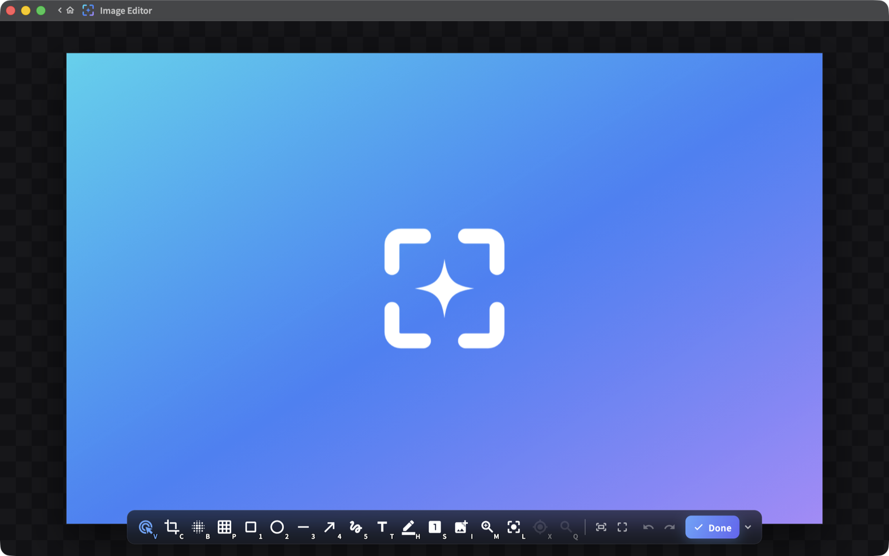
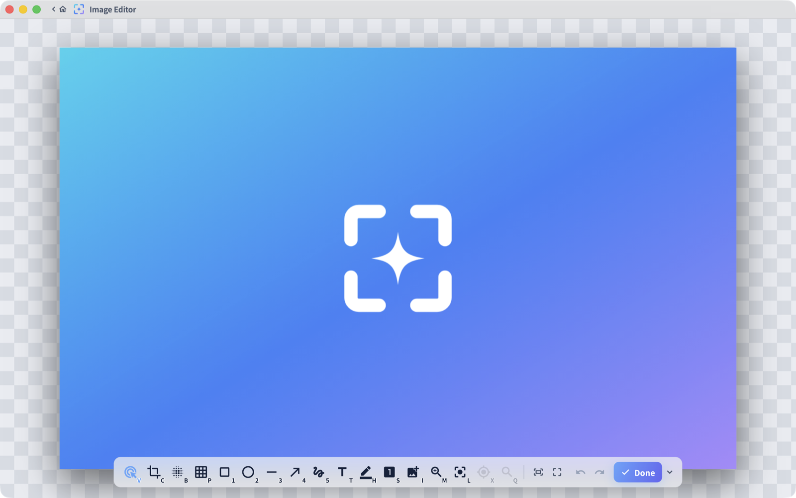

Free · Open source · macOS + Windows免費 · 開放原始碼 · macOS + Windows
Capture it exactly. 截圖，分毫不差。
Screenshot, annotation and screen recording with pixel-level aim — frozen multi-display capture, a loupe that names the pixel, native performance on both platforms. 螢幕截圖、標註與螢幕錄影，具備像素級瞄準 — 多螢幕凍結截圖、指名像素的放大鏡，雙平台皆為原生效能。
macOS 14+ · signed & notarized · Windows 10+ · unsigned for now, SmartScreen shows
More info → Run anyway
also: portable zip
· all releases
macOS 14+ · 已簽章並公證 · Windows 10+ · 目前未簽章，SmartScreen 會顯示
其他資訊 → 仍要執行
另有：可攜版 zip
· 所有版本


Made for the exact pixel為精確到像素而生
Pixel loupe像素放大鏡
One grid cell is one screen pixel. The loupe names the pixel you are on; arrow keys nudge by exactly one. 一格就是一個螢幕像素。放大鏡指名你所在的像素；方向鍵每次精準微調一格。
⌘⌥1 PrtScrAnnotate on a frozen frame在凍結畫面上標註
Shapes, arrows, pen, highlighter, text, blur, spotlight and step badges — across every display at once. 形狀、箭頭、畫筆、螢光筆、文字、模糊、聚光燈與步驟標記 — 所有螢幕同時進行。
Record the screen螢幕錄影
MP4 (H.264 / HEVC), GIF and HDR10, with system audio and microphone mixed into one clean track. MP4（H.264 / HEVC）、GIF 與 HDR10；系統音訊與麥克風混成單一音軌。
Pin to screen釘選到螢幕
Float any capture above your work — drag it anywhere, zoom 25–300%, keep it while you compare. 把任何截圖浮在工作上方 — 隨意拖曳、縮放 25–300%，對照時一直留著。
Element snap元素框選
Selections snap to windows, buttons, toolbars and page elements — no hand-tracing rectangles. 選取範圍自動貼合視窗、按鈕、工具列與網頁元素 — 不必手描框。
HDR faithful忠實 HDR
HDR10 recording and HDR screenshots on supported displays; SDR output stays tone-mapped and true. 支援的顯示器上可 HDR10 錄影與 HDR 截圖；SDR 輸出維持正確的色調映射。
Install安裝
macOS 14+
- Download the macOS .dmg 下載 macOS 版 .dmg
- Drag Glimpr into Applications 把 Glimpr 拖進「應用程式」
- Grant Screen Recording on first launch — the app is signed and notarized 首次啟動時授權「螢幕錄製」— app 已簽章並公證
Windows 10 (1903+) / 11
- Run the downloaded Glimpr-Setup installer 執行下載的 Glimpr-Setup 安裝程式
- SmartScreen: More info → Run anyway — expected while the release is unsigned SmartScreen：其他資訊 → 仍要執行 — 未簽章版本的預期行為
- Or unzip the portable build anywhere 或將可攜版解壓到任意位置